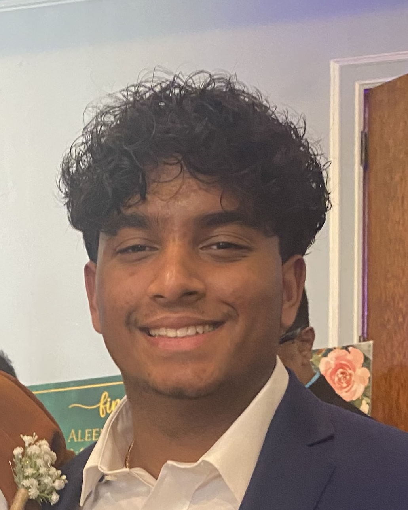

About Me
Howdy! I am a senior Computer Science major with a minor in Business at Texas A&M University. I have professional experience as a Computer Systems Engineer Intern at NASA's Johnson Space Center, and have multiple full stack applications under my belt. I am passionate about Software Engineering and DevOps.
Interests in Accessibility
As a developer focused on backend and automation, I am interested in how accessible coding standards can be integrated into DevOps pipelines. I want to ensure that the tools we build are usable by everyone, regardless of their physical abilities. I would love to connect with teammates interested in building inclusive automation tools.
Hobbies & Interests
- NFL & NBA
- Weightlifting & Pickleball
- Energy Drinks